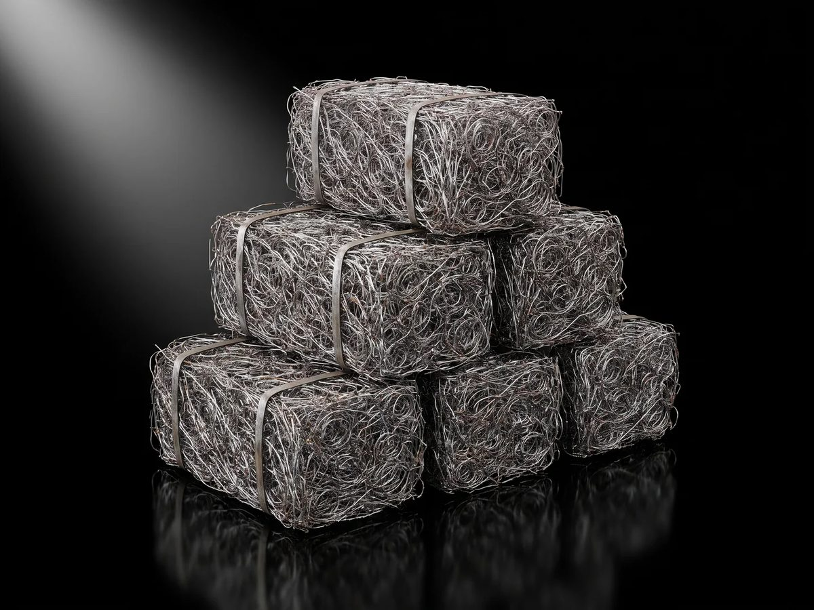

Recycled steel and non-ferrous metal, collected from councils, homes, business and industry, processed at our own plant in Victoria or wherever in Australia the volume suits, and supplied to mills, foundries, manufacturers and export buyers. Every load weighed in, weighed out and reported.
~99%Ferrous content
6–10 tProcessed per day
130–250 tAvailable per month
0.70 tCO₂ / t, scrap-EAF steel
Recycled · A Recycle Group business1
Who we are
01 · The business
The metals business of Recycle Group
Recycle Group is the Victorian resource-recovery group behind The Mattress Recycling Company. Its plant recovers 99% of the steel from every mattress it processes, an $8.5 million investment. Recycled is the group's route to market for that steel and for the non-ferrous metal its businesses recover, and it collects metal from councils, households, business, institutions and industry: 766 items in 15 categories, one service fee quoted upfront.
What we supply
Processed spring steel: high-tensile / high-carbon, ~99% ferrous, ~99% free of fabric and foam. Loose or baled. 130–250 t a month.
Ferrous scrap: sorted, sized where needed, contamination removed, baled.
Copper and cable: sorted copper by grade; cable granulated mechanically, never burnt.
Aluminium: sorted by family (extrusion, sheet, cast), baled.
Stainless and brass: kept off the ferrous line, sorted and accumulated to lots.
Who we supply
Steel mills and foundries: single-grade feedstock with a known origin.
Traders and exporters: containers packed and counted at our plant.
Manufacturers: recycled inputs with the recycled-content basis documented.
Recyclers and councils: a processing partner with an end market.

Baled, counted, recorded (rendered)
The plant
Shredders
2 × Terex twin-shaft, up to 1,400 m³ of product a day
Separation
3 magnets · 2 vibrating decks · 4 dust extraction units · 2 air blades · electrostatic fibre separator
Handling
6 conveyors · 3 excavators · 7 operators per shift
Throughput
One mattress every 38 seconds on average
Recycled · Capability statement2
Recorded and reported
02 · Traceability
Four numbers, every load
Every load that comes through Recycled is weighed in, tracked through the line, weighed out, dispatched and reported. The partner who sent it and the buyer who receives it both get the record.
1 · Weighed inWeighbridge
Docket, date, partner, site, gross weight
2 · Turned intoProduct
The line it went down and what it became
3 · RecoveredWeight out
Saleable metal, recovery %, residual reported
4 · SavingCO₂-e
Recovered t × published recycling credit
For partners who send us metal
Councils, manufacturers, demolition contractors, electricians and recyclers see every load in their own portal, Recycled Connect: weight in, what it was turned into, weight out, whether it went to an Australian mill or into a container, and the carbon that saved. Recovery statements for any period, site statements, and a statement for any single load.
For buyers who receive it
Every dispatch can carry a load statement: source stream, process, weighed output, bale count, container number and the recycled-content basis. Mills get a single-grade feedstock with a paper trail; manufacturers get recycled content they can put in a report.
Recycled does the recording and issues the statements. Partners read and download. Figures marked as estimates use the usual recovery rate for that metal; all others are weighed. Environmental reporting is through YARTA Environmental Sustainability, a Recycle Group initiative.
Recovery statement · A4 · one per period: loads, weight in, what it became, weight recovered and the CO₂-e avoided
Recycled · Capability statement3
Environmental impact
03 · The saving
Steel that never has to be made twice
2,340–4,500 tCO₂-e avoided a year
1,560–3,000 t of steel a year × 1.5 t CO₂ per tonne of scrap used (World Steel Association). Arithmetic from the public monthly volume; an estimate.
Steel
1.5 t CO₂ avoided per tonne. World Steel Association scrap fact sheet
Copper
5.2 t CO₂-e per tonne. US EPA WARM, copper wire
Aluminium
7.9 t CO₂-e per tonne. US EPA WARM, aluminium ingot
Mixed metals
4.8 t CO₂-e per tonne. US EPA WARM (stand-in for brass)
Trees, cars
0.060 t CO₂ per tree over ten years; 4.6 t CO₂ per car per year. US EPA
Metal in landfill does not break down, so no landfill-methane saving is claimed. The saving is the carbon avoided by not making the same metal new from ore, net of collection and reprocessing.
Where this goes: recycled rebar
Reinforcing bar is the second-largest home for recycled steel on earth, and Australia's rebar is made from scrap in electric arc furnaces, at 0.70 t CO₂ per tonne of crude steel against 2.32 for blast-furnace steel (worldsteel, 2023). The missing piece is a documented, consistent, locally processed scrap supply.
01
Scrap steel
Recovered from mattresses, demolition, manufacturing and councils
02
Processed locally
Cleaned, sorted and baled to a defined spec at our plant or near the source
03
Australian EAF mill
Melted in an electric arc furnace running on scrap
04
Recycled rebar
Rolled, cut and bent
05
Australian construction
52% of all steel use is buildings and infrastructure
Recycled’s role is steps 01 and 02 today. The mill partnership and branded recycled products are the roadmap.
Recycled · Capability statement4
Products and contact
04 · Candidate products
What recycled steel could become
Products that fit the steel we process: heavy, simple, high-volume, and built in Australia. A working list, not a catalogue. Bins, stillages, cages and racking are products the group already buys; making them from its own recovered steel is the obvious first loop.
Reinforcing bar
Steel mesh
Star pickets
Fence posts
Temporary fencing
Guardrail
Bollards
Road barriers
Steel pallets
Stillages & cages
Hook & skip bins
Waste bins
Warehouse racking
Storage units
Drainage grates
Manhole covers
Brackets & sections
Street furniture
Trailer components
Beams & sections
Systems
Recycle Group
EPA Victoria registration R000312600 · ISO 9001:2015 · ISO 14001:2015 · ISO 45001:2018. Daily safety, training and compliance through the group's eCheck system. Documentation supplied with proposals.
Supply
National and export
Processing in Victoria, or arranged anywhere in Australia for the right volume. Road and rail to every state; containers packed for export. Samples before any commercial commitment.
Contact
Nigel Taylor
Director of Brand & Growth Recycled 0427 888 222 nigel@recycle.net.au rdodeployme.github.io/global-steel
Straight answers. We will tell you exactly where the metal came from and how it was processed, what we can commit to monthly, and anything we do not know yet. We will not claim laboratory analysis we have not carried out, volumes the plant does not produce, grades we do not have, or certifications we do not hold.